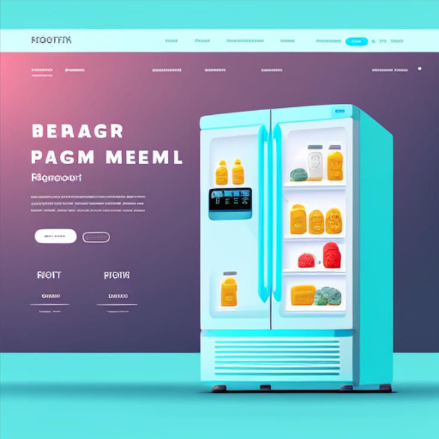

CoolCognition is a game-changing project that aims to revolutionize the way we manage our food and reduce waste. The project leverages cutting-edge technology to create a smarter, more efficient food storage solution by integrating AI and image recognition into a digital interface that can be accessed through a smart device or computer. The digital interface will allow users to easily manage their food inventory, create meal plans, and track the freshness of their food, all while reducing waste and saving money. The project's goal is to create a sustainable food management system that will not only benefit individuals, but also have a positive impact on the environment by reducing food waste and conserving resources. The innovative use of AI and image recognition technology will transform the way we think about food storage, making it easier and more convenient to keep our food fresh and our refrigerators organized. This project is setting a new standard for the future of food storage, and it's poised to have a significant impact on the industry and our daily lives.
or
Synopsys Project : "Implementing the use of AI and Image Recognition to Optimize Food Storage in Refrigerators Through a Digital Interface"
Author: Kevin Chang